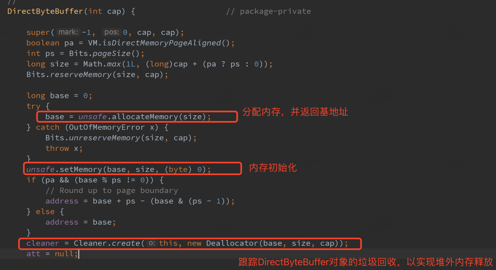
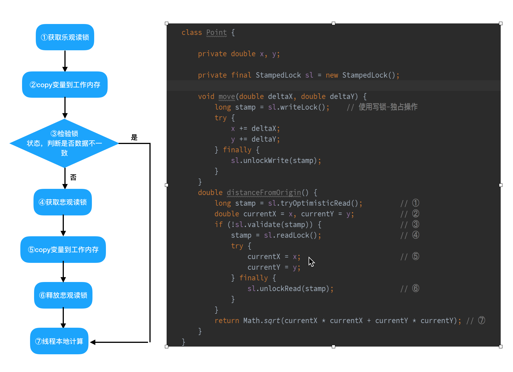
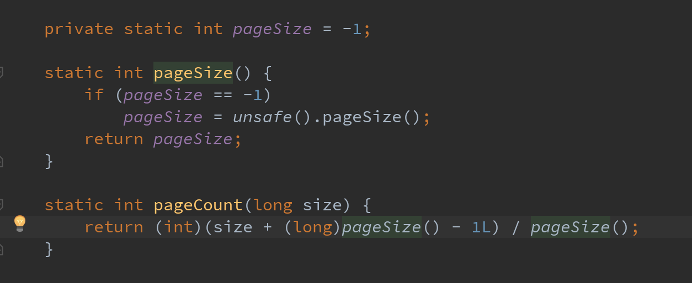

- AQS 万字图文全面解析.md.html
- Docker 镜像构建原理及源码分析.md.html
- ElasticSearch 小白从入门到精通.md.html
- JVM CPU Profiler技术原理及源码深度解析.md.html
- JVM 垃圾收集器.md.html
- JVM 面试的 30 个知识点.md.html
- Java IO 体系、线程模型大总结.md.html
- Java NIO浅析.md.html
- Java 面试题集锦（网络篇）.md.html
- Java-直接内存 DirectMemory 详解.md.html
- Java中9种常见的CMS GC问题分析与解决（上）.md.html
- Java中9种常见的CMS GC问题分析与解决（下）.md.html
- Java中的SPI.md.html
- Java中的ThreadLocal.md.html
- Java线程池实现原理及其在美团业务中的实践.md.html
- Java魔法类：Unsafe应用解析.md.html
- Kafka 源码阅读笔记.md.html
- Kafka、ActiveMQ、RabbitMQ、RocketMQ 区别以及高可用原理.md.html
- MySQL · 引擎特性 · InnoDB Buffer Pool.md.html
- MySQL · 引擎特性 · InnoDB IO子系统.md.html
- MySQL · 引擎特性 · InnoDB 事务系统.md.html
- MySQL · 引擎特性 · InnoDB 同步机制.md.html
- MySQL · 引擎特性 · InnoDB 数据页解析.md.html
- MySQL · 引擎特性 · InnoDB崩溃恢复.md.html
- MySQL · 引擎特性 · 临时表那些事儿.md.html
- MySQL 主从复制 半同步复制.md.html
- MySQL 主从复制 基于GTID复制.md.html
- MySQL 主从复制.md.html
- MySQL 事务日志(redo log和undo log).md.html
- MySQL 亿级别数据迁移实战代码分享.md.html
- MySQL 从一条数据说起-InnoDB行存储数据结构.md.html
- MySQL 地基基础：事务和锁的面纱.md.html
- MySQL 地基基础：数据字典.md.html
- MySQL 地基基础：数据库字符集.md.html
- MySQL 性能优化：碎片整理.md.html
- MySQL 故障诊断：一个 ALTER TALBE 执行了很久，你慌不慌？.md.html
- MySQL 故障诊断：如何在日志中轻松定位大事务.md.html
- MySQL 故障诊断：教你快速定位加锁的 SQL.md.html
- MySQL 日志详解.md.html
- MySQL 的半同步是什么？.md.html
- MySQL中的事务和MVCC.md.html
- MySQL事务_事务隔离级别详解.md.html
- MySQL优化：优化 select count().md.html
- MySQL共享锁、排他锁、悲观锁、乐观锁.md.html
- MySQL的MVCC（多版本并发控制）.md.html
- QingStor 对象存储架构设计及最佳实践.md.html
- RocketMQ 面试题集锦.md.html
- SnowFlake 雪花算法生成分布式 ID.md.html
- Spring Boot 2.x 结合 k8s 实现分布式微服务架构.md.html
- Spring Boot 教程：如何开发一个 starter.md.html
- Spring MVC 原理.md.html
- Spring MyBatis和Spring整合的奥秘.md.html
- Spring 帮助你更好的理解Spring循环依赖.md.html
- Spring 循环依赖及解决方式.md.html
- Spring中眼花缭乱的BeanDefinition.md.html
- Vert.x 基础入门.md.html
- eBay 的 Elasticsearch 性能调优实践.md.html
- 不可不说的Java“锁”事.md.html
- 互联网并发限流实战.md.html
- 从ReentrantLock的实现看AQS的原理及应用.md.html
- 从SpringCloud开始，聊微服务架构.md.html
- 全面了解 JDK 线程池实现原理.md.html
- 分布式一致性理论与算法.md.html
- 分布式一致性算法 Raft.md.html
- 分布式唯一 ID 解析.md.html
- 分布式链路追踪：集群管理设计.md.html
- 动态代理种类及原理，你知道多少？.md.html
- 响应式架构与 RxJava 在有赞零售的实践.md.html
- 大数据算法——布隆过滤器.md.html
- 如何优雅地记录操作日志？.md.html
- 如何设计一个亿级消息量的 IM 系统.md.html
- 异步网络模型.md.html
- 当我们在讨论CQRS时，我们在讨论些神马？.md.html
- 彻底理解 MySQL 的索引机制.md.html
- 最全的 116 道 Redis 面试题解答.md.html
- 有赞权限系统(SAM).md.html
- 有赞零售中台建设方法的探索与实践.md.html
- 服务注册与发现原理剖析（Eureka、Zookeeper、Nacos）.md.html
- 深入浅出Cache.md.html
- 深入理解 MySQL 底层实现.md.html
- 漫画讲解 git rebase VS git merge.md.html
- 生成浏览器唯一稳定 ID 的探索.md.html
- 缓存 如何保证缓存与数据库的双写一致性？.md.html
- 网易严选怎么做全链路监控的？.md.html
- 美团万亿级 KV 存储架构与实践.md.html
- 美团点评Kubernetes集群管理实践.md.html
- 美团百亿规模API网关服务Shepherd的设计与实现.md.html
- 解读《阿里巴巴 Java 开发手册》背后的思考.md.html
- 认识 MySQL 和 Redis 的数据一致性问题.md.html
- 进阶：Dockerfile 高阶使用指南及镜像优化.md.html
- 铁总在用的高性能分布式缓存计算框架 Geode.md.html
- 阿里云PolarDB及其共享存储PolarFS技术实现分析（上）.md.html
- 阿里云PolarDB及其共享存储PolarFS技术实现分析（下）.md.html
- 面试最常被问的 Java 后端题.md.html
- 领域驱动设计在互联网业务开发中的实践.md.html
- 领域驱动设计的菱形对称架构.md.html
- 高效构建 Docker 镜像的最佳实践.md.html
- 捐赠
Java魔法类：Unsafe应用解析
前言
Unsafe是位于sun.misc包下的一个类，主要提供一些用于执行低级别、不安全操作的方法，如直接访问系统内存资源、自主管理内存资源等，这些方法在提升Java运行效率、增强Java语言底层资源操作能力方面起到了很大的作用。但由于Unsafe类使Java语言拥有了类似C语言指针一样操作内存空间的能力，这无疑也增加了程序发生相关指针问题的风险。在程序中过度、不正确使用Unsafe类会使得程序出错的概率变大，使得Java这种安全的语言变得不再“安全”，因此对Unsafe的使用一定要慎重。
注：本文对sun.misc.Unsafe公共API功能及相关应用场景进行介绍。
基本介绍
如下Unsafe源码所示，Unsafe类为一单例实现，提供静态方法getUnsafe获取Unsafe实例，当且仅当调用getUnsafe方法的类为引导类加载器所加载时才合法，否则抛出SecurityException异常。
public final class Unsafe {
// 单例对象
private static final Unsafe theUnsafe;
private Unsafe() {
}
@CallerSensitive
public static Unsafe getUnsafe() {
Class var0 = Reflection.getCallerClass();
// 仅在引导类加载器`BootstrapClassLoader`加载时才合法
if(!VM.isSystemDomainLoader(var0.getClassLoader())) {
throw new SecurityException("Unsafe");
} else {
return theUnsafe;
}
}
}
那如若想使用这个类，该如何获取其实例？有如下两个可行方案。
其一，从getUnsafe方法的使用限制条件出发，通过Java命令行命令-Xbootclasspath/a把调用Unsafe相关方法的类A所在jar包路径追加到默认的bootstrap路径中，使得A被引导类加载器加载，从而通过Unsafe.getUnsafe方法安全的获取Unsafe实例。
java -Xbootclasspath/a: ${path} // 其中path为调用Unsafe相关方法的类所在jar包路径
其二，通过反射获取单例对象theUnsafe。
private static Unsafe reflectGetUnsafe() {
try {
Field field = Unsafe.class.getDeclaredField("theUnsafe");
field.setAccessible(true);
return (Unsafe) field.get(null);
} catch (Exception e) {
log.error(e.getMessage(), e);
return null;
}
}
功能介绍

如上图所示，Unsafe提供的API大致可分为内存操作、CAS、Class相关、对象操作、线程调度、系统信息获取、内存屏障、数组操作等几类，下面将对其相关方法和应用场景进行详细介绍。
内存操作
这部分主要包含堆外内存的分配、拷贝、释放、给定地址值操作等方法。
//分配内存, 相当于C++的malloc函数
public native long allocateMemory(long bytes);
//扩充内存
public native long reallocateMemory(long address, long bytes);
//释放内存
public native void freeMemory(long address);
//在给定的内存块中设置值
public native void setMemory(Object o, long offset, long bytes, byte value);
//内存拷贝
public native void copyMemory(Object srcBase, long srcOffset, Object destBase, long destOffset, long bytes);
//获取给定地址值，忽略修饰限定符的访问限制。与此类似操作还有: getInt，getDouble，getLong，getChar等
public native Object getObject(Object o, long offset);
//为给定地址设置值，忽略修饰限定符的访问限制，与此类似操作还有: putInt,putDouble，putLong，putChar等
public native void putObject(Object o, long offset, Object x);
//获取给定地址的byte类型的值（当且仅当该内存地址为allocateMemory分配时，此方法结果为确定的）
public native byte getByte(long address);
//为给定地址设置byte类型的值（当且仅当该内存地址为allocateMemory分配时，此方法结果才是确定的）
public native void putByte(long address, byte x);
通常，我们在Java中创建的对象都处于堆内内存（heap）中，堆内内存是由JVM所管控的Java进程内存，并且它们遵循JVM的内存管理机制，JVM会采用垃圾回收机制统一管理堆内存。与之相对的是堆外内存，存在于JVM管控之外的内存区域，Java中对堆外内存的操作，依赖于Unsafe提供的操作堆外内存的native方法。
使用堆外内存的原因
- 对垃圾回收停顿的改善。由于堆外内存是直接受操作系统管理而不是JVM，所以当我们使用堆外内存时，即可保持较小的堆内内存规模。从而在GC时减少回收停顿对于应用的影响。
- 提升程序I/O操作的性能。通常在I/O通信过程中，会存在堆内内存到堆外内存的数据拷贝操作，对于需要频繁进行内存间数据拷贝且生命周期较短的暂存数据，都建议存储到堆外内存。
典型应用
DirectByteBuffer是Java用于实现堆外内存的一个重要类，通常用在通信过程中做缓冲池，如在Netty、MINA等NIO框架中应用广泛。DirectByteBuffer对于堆外内存的创建、使用、销毁等逻辑均由Unsafe提供的堆外内存API来实现。
下图为DirectByteBuffer构造函数，创建DirectByteBuffer的时候，通过Unsafe.allocateMemory分配内存、Unsafe.setMemory进行内存初始化，而后构建Cleaner对象用于跟踪DirectByteBuffer对象的垃圾回收，以实现当DirectByteBuffer被垃圾回收时，分配的堆外内存一起被释放。

那么如何通过构建垃圾回收追踪对象Cleaner实现堆外内存释放呢？
Cleaner继承自Java四大引用类型之一的虚引用PhantomReference（众所周知，无法通过虚引用获取与之关联的对象实例，且当对象仅被虚引用引用时，在任何发生GC的时候，其均可被回收），通常PhantomReference与引用队列ReferenceQueue结合使用，可以实现虚引用关联对象被垃圾回收时能够进行系统通知、资源清理等功能。如下图所示，当某个被Cleaner引用的对象将被回收时，JVM垃圾收集器会将此对象的引用放入到对象引用中的pending链表中，等待Reference-Handler进行相关处理。其中，Reference-Handler为一个拥有最高优先级的守护线程，会循环不断的处理pending链表中的对象引用，执行Cleaner的clean方法进行相关清理工作。

所以当DirectByteBuffer仅被Cleaner引用（即为虚引用）时，其可以在任意GC时段被回收。当DirectByteBuffer实例对象被回收时，在Reference-Handler线程操作中，会调用Cleaner的clean方法根据创建Cleaner时传入的Deallocator来进行堆外内存的释放。

CAS相关
如下源代码释义所示，这部分主要为CAS相关操作的方法。
/**
* CAS
* @param o 包含要修改field的对象
* @param offset 对象中某field的偏移量
* @param expected 期望值
* @param update 更新值
* @return true | false
*/
public final native boolean compareAndSwapObject(Object o, long offset, Object expected, Object update);
public final native boolean compareAndSwapInt(Object o, long offset, int expected,int update);
public final native boolean compareAndSwapLong(Object o, long offset, long expected, long update);
什么是CAS? 即比较并替换，实现并发算法时常用到的一种技术。CAS操作包含三个操作数——内存位置、预期原值及新值。执行CAS操作的时候，将内存位置的值与预期原值比较，如果相匹配，那么处理器会自动将该位置值更新为新值，否则，处理器不做任何操作。我们都知道，CAS是一条CPU的原子指令（cmpxchg指令），不会造成所谓的数据不一致问题，Unsafe提供的CAS方法（如compareAndSwapXXX）底层实现即为CPU指令cmpxchg。
典型应用
CAS在java.util.concurrent.atomic相关类、Java AQS、CurrentHashMap等实现上有非常广泛的应用。如下图所示，AtomicInteger的实现中，静态字段valueOffset即为字段value的内存偏移地址，valueOffset的值在AtomicInteger初始化时，在静态代码块中通过Unsafe的objectFieldOffset方法获取。在AtomicInteger中提供的线程安全方法中，通过字段valueOffset的值可以定位到AtomicInteger对象中value的内存地址，从而可以根据CAS实现对value字段的原子操作。

下图为某个AtomicInteger对象自增操作前后的内存示意图，对象的基地址baseAddress=“0x110000”，通过baseAddress+valueOffset得到value的内存地址valueAddress=“0x11000c”；然后通过CAS进行原子性的更新操作，成功则返回，否则继续重试，直到更新成功为止。

线程调度
这部分，包括线程挂起、恢复、锁机制等方法。
//取消阻塞线程
public native void unpark(Object thread);
//阻塞线程
public native void park(boolean isAbsolute, long time);
//获得对象锁（可重入锁）
@Deprecated
public native void monitorEnter(Object o);
//释放对象锁
@Deprecated
public native void monitorExit(Object o);
//尝试获取对象锁
@Deprecated
public native boolean tryMonitorEnter(Object o);
如上源码说明中，方法park、unpark即可实现线程的挂起与恢复，将一个线程进行挂起是通过park方法实现的，调用park方法后，线程将一直阻塞直到超时或者中断等条件出现；unpark可以终止一个挂起的线程，使其恢复正常。
典型应用
Java锁和同步器框架的核心类AbstractQueuedSynchronizer，就是通过调用LockSupport.park()和LockSupport.unpark()实现线程的阻塞和唤醒的，而LockSupport的park、unpark方法实际是调用Unsafe的park、unpark方式来实现。
Class相关
此部分主要提供Class和它的静态字段的操作相关方法，包含静态字段内存定位、定义类、定义匿名类、检验&确保初始化等。
//获取给定静态字段的内存地址偏移量，这个值对于给定的字段是唯一且固定不变的
public native long staticFieldOffset(Field f);
//获取一个静态类中给定字段的对象指针
public native Object staticFieldBase(Field f);
//判断是否需要初始化一个类，通常在获取一个类的静态属性的时候（因为一个类如果没初始化，它的静态属性也不会初始化）使用。 当且仅当ensureClassInitialized方法不生效时返回false。
public native boolean shouldBeInitialized(Class<?> c);
//检测给定的类是否已经初始化。通常在获取一个类的静态属性的时候（因为一个类如果没初始化，它的静态属性也不会初始化）使用。
public native void ensureClassInitialized(Class<?> c);
//定义一个类，此方法会跳过JVM的所有安全检查，默认情况下，ClassLoader（类加载器）和ProtectionDomain（保护域）实例来源于调用者
public native Class<?> defineClass(String name, byte[] b, int off, int len, ClassLoader loader, ProtectionDomain protectionDomain);
//定义一个匿名类
public native Class<?> defineAnonymousClass(Class<?> hostClass, byte[] data, Object[] cpPatches);
典型应用
从Java 8开始，JDK使用invokedynamic及VM Anonymous Class结合来实现Java语言层面上的Lambda表达式。
- invokedynamic： invokedynamic是Java 7为了实现在JVM上运行动态语言而引入的一条新的虚拟机指令，它可以实现在运行期动态解析出调用点限定符所引用的方法，然后再执行该方法，invokedynamic指令的分派逻辑是由用户设定的引导方法决定。
- VM Anonymous Class：可以看做是一种模板机制，针对于程序动态生成很多结构相同、仅若干常量不同的类时，可以先创建包含常量占位符的模板类，而后通过Unsafe.defineAnonymousClass方法定义具体类时填充模板的占位符生成具体的匿名类。生成的匿名类不显式挂在任何ClassLoader下面，只要当该类没有存在的实例对象、且没有强引用来引用该类的Class对象时，该类就会被GC回收。故而VM Anonymous Class相比于Java语言层面的匿名内部类无需通过ClassClassLoader进行类加载且更易回收。
在Lambda表达式实现中，通过invokedynamic指令调用引导方法生成调用点，在此过程中，会通过ASM动态生成字节码，而后利用Unsafe的defineAnonymousClass方法定义实现相应的函数式接口的匿名类，然后再实例化此匿名类，并返回与此匿名类中函数式方法的方法句柄关联的调用点；而后可以通过此调用点实现调用相应Lambda表达式定义逻辑的功能。下面以如下图所示的Test类来举例说明。

Test类编译后的class文件反编译后的结果如下图一所示（删除了对本文说明无意义的部分），我们可以从中看到main方法的指令实现、invokedynamic指令调用的引导方法BootstrapMethods、及静态方法lambda$main$0（实现了Lambda表达式中字符串打印逻辑）等。在引导方法执行过程中，会通过Unsafe.defineAnonymousClass生成如下图二所示的实现Consumer接口的匿名类。其中，accept方法通过调用Test类中的静态方法lambda$main$0来实现Lambda表达式中定义的逻辑。而后执行语句consumer.accept（"lambda"）其实就是调用下图二所示的匿名类的accept方法。

对象操作
此部分主要包含对象成员属性相关操作及非常规的对象实例化方式等相关方法。
//返回对象成员属性在内存地址相对于此对象的内存地址的偏移量
public native long objectFieldOffset(Field f);
//获得给定对象的指定地址偏移量的值，与此类似操作还有：getInt，getDouble，getLong，getChar等
public native Object getObject(Object o, long offset);
//给定对象的指定地址偏移量设值，与此类似操作还有：putInt，putDouble，putLong，putChar等
public native void putObject(Object o, long offset, Object x);
//从对象的指定偏移量处获取变量的引用，使用volatile的加载语义
public native Object getObjectVolatile(Object o, long offset);
//存储变量的引用到对象的指定的偏移量处，使用volatile的存储语义
public native void putObjectVolatile(Object o, long offset, Object x);
//有序、延迟版本的putObjectVolatile方法，不保证值的改变被其他线程立即看到。只有在field被volatile修饰符修饰时有效
public native void putOrderedObject(Object o, long offset, Object x);
//绕过构造方法、初始化代码来创建对象
public native Object allocateInstance(Class<?> cls) throws InstantiationException;
典型应用
- 常规对象实例化方式：我们通常所用到的创建对象的方式，从本质上来讲，都是通过new机制来实现对象的创建。但是，new机制有个特点就是当类只提供有参的构造函数且无显示声明无参构造函数时，则必须使用有参构造函数进行对象构造，而使用有参构造函数时，必须传递相应个数的参数才能完成对象实例化。
- 非常规的实例化方式：而Unsafe中提供allocateInstance方法，仅通过Class对象就可以创建此类的实例对象，而且不需要调用其构造函数、初始化代码、JVM安全检查等。它抑制修饰符检测，也就是即使构造器是private修饰的也能通过此方法实例化，只需提类对象即可创建相应的对象。由于这种特性，allocateInstance在java.lang.invoke、Objenesis（提供绕过类构造器的对象生成方式）、Gson（反序列化时用到）中都有相应的应用。
如下图所示，在Gson反序列化时，如果类有默认构造函数，则通过反射调用默认构造函数创建实例，否则通过UnsafeAllocator来实现对象实例的构造，UnsafeAllocator通过调用Unsafe的allocateInstance实现对象的实例化，保证在目标类无默认构造函数时，反序列化不够影响。

数组相关
这部分主要介绍与数据操作相关的arrayBaseOffset与arrayIndexScale这两个方法，两者配合起来使用，即可定位数组中每个元素在内存中的位置。
//返回数组中第一个元素的偏移地址
public native int arrayBaseOffset(Class<?> arrayClass);
//返回数组中一个元素占用的大小
public native int arrayIndexScale(Class<?> arrayClass);
典型应用
这两个与数据操作相关的方法，在java.util.concurrent.atomic 包下的AtomicIntegerArray（可以实现对Integer数组中每个元素的原子性操作）中有典型的应用，如下图AtomicIntegerArray源码所示，通过Unsafe的arrayBaseOffset、arrayIndexScale分别获取数组首元素的偏移地址base及单个元素大小因子scale。后续相关原子性操作，均依赖于这两个值进行数组中元素的定位，如下图二所示的getAndAdd方法即通过checkedByteOffset方法获取某数组元素的偏移地址，而后通过CAS实现原子性操作。

内存屏障
在Java 8中引入，用于定义内存屏障（也称内存栅栏，内存栅障，屏障指令等，是一类同步屏障指令，是CPU或编译器在对内存随机访问的操作中的一个同步点，使得此点之前的所有读写操作都执行后才可以开始执行此点之后的操作），避免代码重排序。
//内存屏障，禁止load操作重排序。屏障前的load操作不能被重排序到屏障后，屏障后的load操作不能被重排序到屏障前
public native void loadFence();
//内存屏障，禁止store操作重排序。屏障前的store操作不能被重排序到屏障后，屏障后的store操作不能被重排序到屏障前
public native void storeFence();
//内存屏障，禁止load、store操作重排序
public native void fullFence();
典型应用
在Java 8中引入了一种锁的新机制——StampedLock，它可以看成是读写锁的一个改进版本。StampedLock提供了一种乐观读锁的实现，这种乐观读锁类似于无锁的操作，完全不会阻塞写线程获取写锁，从而缓解读多写少时写线程“饥饿”现象。由于StampedLock提供的乐观读锁不阻塞写线程获取读锁，当线程共享变量从主内存load到线程工作内存时，会存在数据不一致问题，所以当使用StampedLock的乐观读锁时，需要遵从如下图用例中使用的模式来确保数据的一致性。

如上图用例所示计算坐标点Point对象，包含点移动方法move及计算此点到原点的距离的方法distanceFromOrigin。在方法distanceFromOrigin中，首先，通过tryOptimisticRead方法获取乐观读标记；然后从主内存中加载点的坐标值 (x,y)；而后通过StampedLock的validate方法校验锁状态，判断坐标点(x,y)从主内存加载到线程工作内存过程中，主内存的值是否已被其他线程通过move方法修改，如果validate返回值为true，证明(x, y)的值未被修改，可参与后续计算；否则，需加悲观读锁，再次从主内存加载(x,y)的最新值，然后再进行距离计算。其中，校验锁状态这步操作至关重要，需要判断锁状态是否发生改变，从而判断之前copy到线程工作内存中的值是否与主内存的值存在不一致。
下图为StampedLock.validate方法的源码实现，通过锁标记与相关常量进行位运算、比较来校验锁状态，在校验逻辑之前，会通过Unsafe的loadFence方法加入一个load内存屏障，目的是避免上图用例中步骤②和StampedLock.validate中锁状态校验运算发生重排序导致锁状态校验不准确的问题。

系统相关
这部分包含两个获取系统相关信息的方法。
//返回系统指针的大小。返回值为4（32位系统）或 8（64位系统）。
public native int addressSize();
//内存页的大小，此值为2的幂次方。
public native int pageSize();
典型应用
如下图所示的代码片段，为java.nio下的工具类Bits中计算待申请内存所需内存页数量的静态方法，其依赖于Unsafe中pageSize方法获取系统内存页大小实现后续计算逻辑。

结语
本文对Java中的sun.misc.Unsafe的用法及应用场景进行了基本介绍，我们可以看到Unsafe提供了很多便捷、有趣的API方法。即便如此，由于Unsafe中包含大量自主操作内存的方法，如若使用不当，会对程序带来许多不可控的灾难。因此对它的使用我们需要慎之又慎。
参考资料
© 2019 - 2023 Liangliang Lee. Powered by gin and hexo-theme-book.